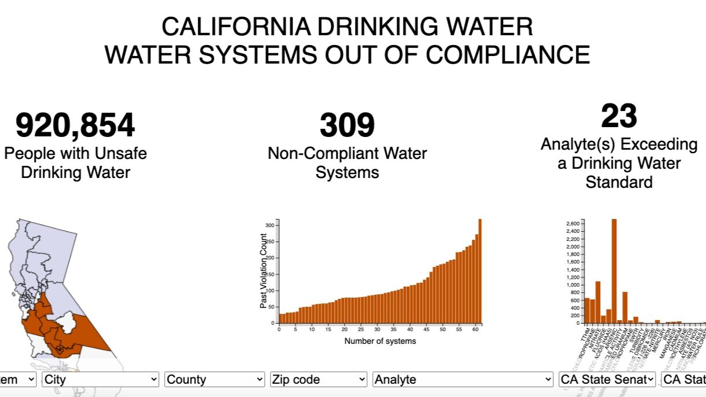

HW3-drafting-viz
1. Which option do you plan to pursue?
I am going to pursue the first option, which is the one I planned on doing since the start.
2. Reinstate your question(s). Has this changed at all since HW #1? How so?
From working with the data I have boiled it down to understanding the differences between Sacramento county and Ventura County. I have past, present, and future data in one shape or form for both of these counties. I don’t believe I have the best data as there is room for a lot of interpretation, but I can use each one to represent a figure on my visualization. I am interested in how different these two counties are given their geographic differences. A better comparison would be to directly measure between a more northern and more southern county, but these counties had the most data.
3. Explain which variables from your data set(s) you will use to answer your question(s) and how
The variables of interest are as follows:
org_id: An organizational ID that refers to a specific water agencyforecast_start_date: Start date for projected datasupplier_name: Name of the supplier
These variables are present in each dataset. supplier_name and org_id will be used to identify the water agencies in Ventura and Sacramento counties. These will be paired with forecast_start_date to plot the respective values from each dataset onto a time series plot.
The variables of interest within the past dataset (historical_production) are:
water_produced_or_delivered: If the water is being produced or deliveredwater_type: What type of facility the water is coming from or going toquanitity_acre_feet: In units acre-feet, the quanitity of water from each observation
These variables, along with the general variables, will be used to identify the differences of water type production/delivery between Sacramento and Ventura counties.
The variables of interest with the present dataset (water_shortage) are:
state_standard_shortage_level: A shortage level on a scale of 0 - 6 that tells us the water shortage state of each agency
This data is presented every month from 2022 to 2024. It will used to show trends in the counties water levels.
The variables of interest with the projection dataset (five_year_shortage) are:
water_use_acre_feet: projected water used for each agency
water_supplies_acre_feet: projected water supply for each agencybenefit_supply_augmentation_acre_feet: projected supply augmentated (bought) for each agencybenefit_demand_reduction_acre_feet: projected demand reduced for each agency
These variables are projections reported from individual water agencies during the 2020 Urban Water Management Plan submission. They are representative of the worst consecutive 5 years on average. Each row is an projected observation for years 2021 - 2025 because this data was submitted in 2020.
4. Find at least two data visualizations

This is a great visualization. It really brings home the point that simpler can be better. It has some easy to read information and it drives the point home that there are many people out there that don’t have safe drinking water. I think producing something along this line can be affective. Of course, I want to try and produce something with a little more pizzazz as the examples we have seen from class are great.

This is an interesting plot for time series data. makes it has a little more